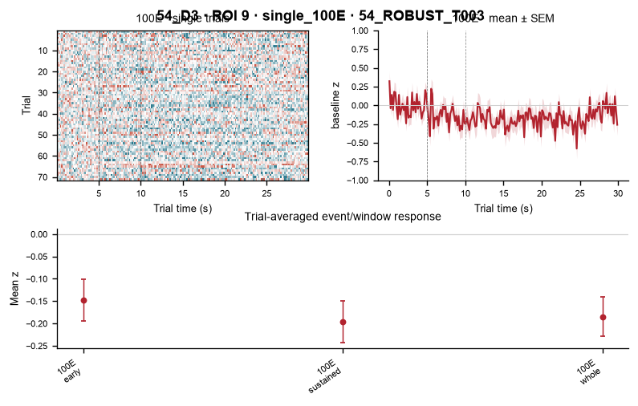
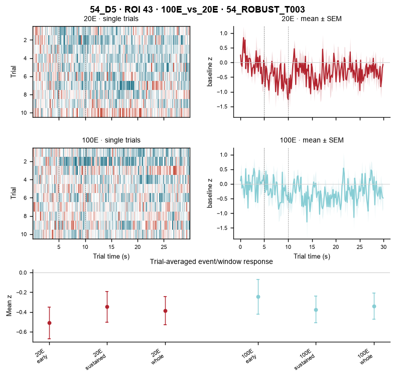

54_ROBUSTPLUS_T003
Identity layer: ROBUST_PLUS_IMAGEFIRST. This page checks this cell/track against the same fixed D1→D9 axis. A blank day means no validated cross-day correspondence, not biological disappearance.
D1
No validated correspondence on this day
D2
No validated correspondence on this day
D3ROI 9

D5ROI 43

D6
No validated correspondence on this day
D7
No validated correspondence on this day
D8
No validated correspondence on this day
D9
No validated correspondence on this day